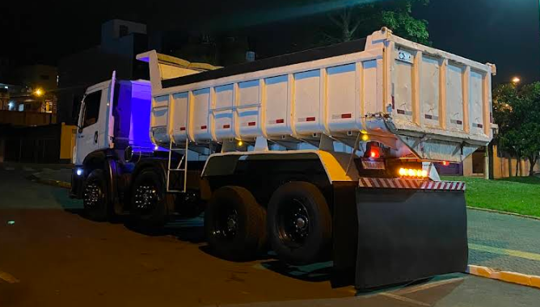

Instalação e Manutenção de 4º Eixo
A Santa Fe Fabricacao e Comercio nasceu com o propósito de oferecer soluções definitivas para o setor rodoviário. Contamos com um galpão industrial totalmente equipado com tecnologia de ponta em soldagem, corte e alinhamento de chassis.
Compromisso com Normas
Sabemos que o seu caminhão é o seu principal instrumento de trabalho. Por isso, todos os nossos serviços, desde a solda mais simples até a instalação de um 4º eixo, seguem rigorosamente as especificações técnicas das montadoras e do CONTRAN.
Nossa Missão
Garantir que a frota de nossos clientes rode com segurança máxima, aumentando sua capacidade de carga e rentabilidade através de serviços de excelência.
